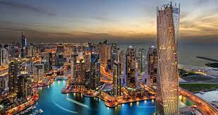
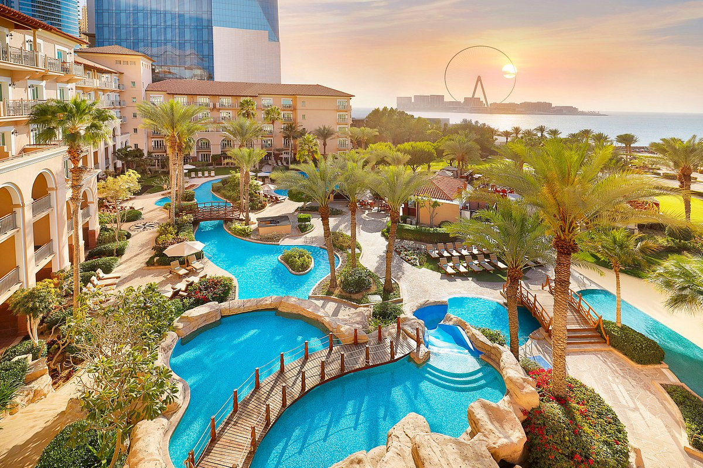
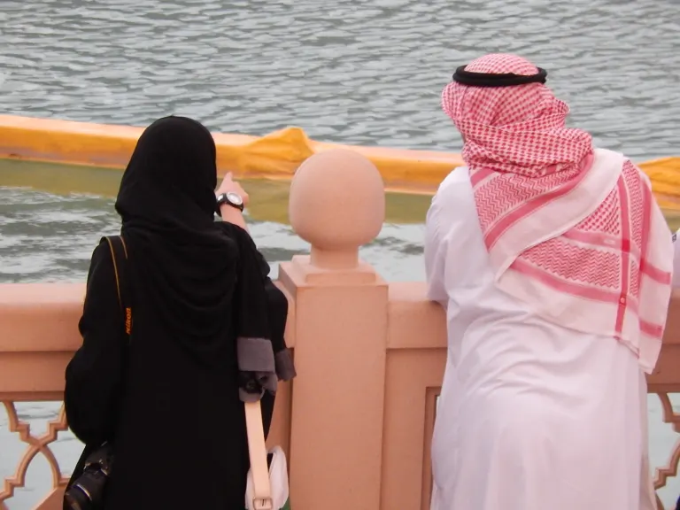

Dubai, o emirado mais populoso
Dubai é a maior cidade e emirado do mesmo nome dos Emirados Árabes Unidos (uma federação de monarquias absolutas hereditárias árabes).
O Emirado de Dubai está localizado na costa do golfo Pérsico, sendo um dos sete emirados que compõem o país. Dubai é o emirado mais populoso
entre os sete emirados, com aproximadamente 2 262 000 habitantes. Está localizada ao longo da costa sul do golfo Pérsico
na península Arábica na Ásia. O município muitas vezes é chamado de Cidade de Dubai para diferenciá-lo do emirado homônimo. A cidade é conhecida
mundialmente pela sua economia extremamente desenvolvida e por seus enormes arranha-céus e largas avenidas.

A receita do emirado é proveniente do turismo, do comércio, do setor imobiliário e dos serviços financeiros. As receitas de petróleo e gás natural
contribuem com menos de 6% (2006) do PIB de 37 bilhões de dólares em 2005. O setor imobiliário e da construção civil, por outro lado, contribuiu com 22,6%
da economia em 2005, antes do atual boom da construção em larga escala. Dubai tem atraído a atenção mundial por seus projetos imobiliários e acontecimentos
esportivos.

O destaque de Dubai como centro mundial de negócios contrasta com a situação de miséria e de violação de direitos humanos dos trabalhadores na construção civil
- grande parte deles migrantes provenientes da Índia, Bangladesh, Paquistão, Afeganistão, Yemen, Sri Lanka, Etiópia, Filipinas, China ou Síria. Mal pagos e mal
alojados, têm sido submetidos a formas de exploração comparáveis às vigentes durante a Revolução Industrial, sendo muitas vezes obrigados a trabalhar sob temperaturas
que podem superar 50 °C. São frequentes os casos de suicídio entre os operários. Segundo Sharla Musabih, diretora do abrigo Casa da Esperança, destinado a mulheres vítimas
de violência, Dubai progrediu muito economicamente nos últimos 10 anos, mas as condições dos trabalhadores são semelhantes às do século XIX.
 